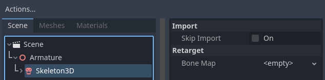
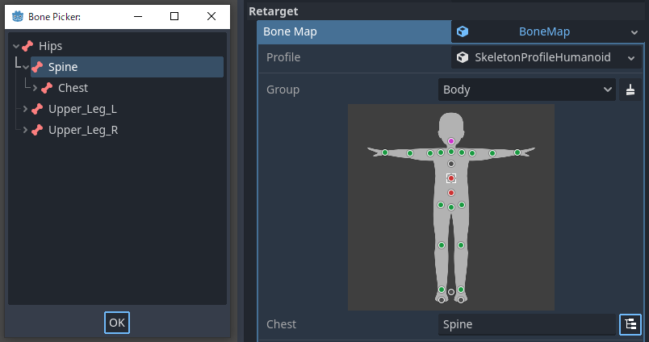
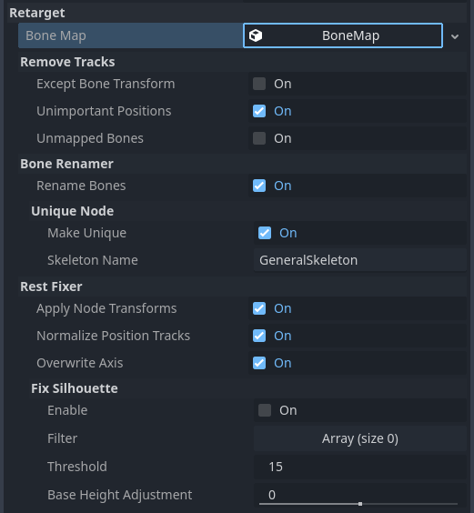
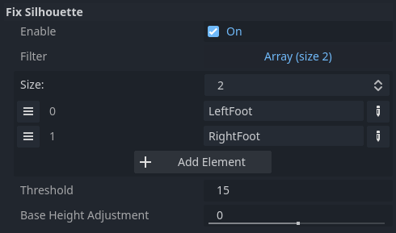

Retarget bộ xương 3D
Các tùy chọn retarget
Bone Map
Khi bạn chọn node Skeleton3D trong menu import scene nâng cao, một menu sẽ xuất hiện ở bên phải chứa mục "Retarget". Mục Retarget có một thuộc tính duy nhất là bone_map.

Khi đã chọn node Skeleton, trước tiên hãy thiết lập một class_bonemap và class_skeletonprofile mới. Godot có một preset tên là class_skeletonprofilehumanoid dành cho các model hình người. Bài hướng dẫn này giả định rằng bạn đang dùng class_skeletonprofilehumanoid.
Ghi chú
Nếu bạn cần một profile khác với class_skeletonprofilehumanoid, bạn có thể xuất một class_skeletonprofile từ trình chỉnh sửa bằng cách chọn một Skeleton3D và dùng menu Skeleton3D trên thanh công cụ của viewport 3D.
Khi bạn dùng class_skeletonprofilehumanoid, việc ánh xạ tự động sẽ được thực hiện khi class_skeletonprofile được đặt. Nếu ánh xạ tự động không hoạt động tốt, bạn có thể ánh xạ xương thủ công.

Mọi ánh xạ bị thiếu, bị trùng lặp hoặc có quan hệ cha-con không đúng sẽ được biểu thị bằng nút màu đỏ tươi / đỏ (tùy theo cài đặt trình chỉnh sửa). Điều này không chặn quá trình import, nhưng nó cảnh báo rằng hoạt ảnh có thể không được chia sẻ chính xác.
Ghi chú
Việc ánh xạ tự động dùng so khớp mẫu (pattern matching) cho tên xương. Vì vậy, chúng tôi khuyên bạn nên dùng các tên tiếng Anh thông dụng cho xương.
Sau khi bạn thiết lập bone_map, có một số tùy chọn trong các mục bên dưới.

Remove Tracks
Nếu bạn import resource dưới dạng class_animationlibrary để chia sẻ, chúng tôi khuyên bạn nên bật các tùy chọn này. Tuy nhiên, nếu bạn import resource dưới dạng scene, trong một số trường hợp nên tắt chúng. Ví dụ, nếu bạn import một nhân vật có phụ kiện được tạo hoạt ảnh, các tùy chọn này có thể khiến phụ kiện không chuyển động.
Except Bone Transform
Loại bỏ mọi track khỏi hoạt ảnh ngoại trừ track Transform của xương.
Unimportant Positions
Loại bỏ khỏi hoạt ảnh các track Position khác với root_bone và scale_base_bone được định nghĩa trong class_skeletonprofile. Trong class_skeletonprofilehumanoid, điều này nghĩa là loại bỏ các track Position khác với "Root" và "Hips". Kể từ Godot 4, hoạt ảnh bao gồm Bone Rest trong giá trị Transform. Nếu bạn tắt tùy chọn này, hoạt ảnh có thể làm thay đổi hình dạng cơ thể một cách khó lường.
Unmapped Bones
Loại bỏ khỏi hoạt ảnh các track Transform của những xương chưa được ánh xạ.
Bone Renamer
Rename Bones
Đổi tên các xương đã được ánh xạ.
Unique Node
Biến Skeleton thành một node duy nhất (unique node) với tên được chỉ định trong skeleton_name. Điều này cho phép thống nhất đường dẫn track hoạt ảnh mà không phụ thuộc vào cấu trúc phân cấp của scene.
Rest Fixer
Các tư thế tham chiếu được định nghĩa trong class_skeletonprofilehumanoid tuân theo các quy tắc sau:
Hình người ở tư thế T (T-pose)
Hình người quay mặt về hướng +Z trong hệ tọa độ tay phải, trục Y hướng lên (Right-Handed Y-UP)
Hình người không nên có Transform ở dạng Node
Trục +Y hướng từ khớp cha tới khớp con
Xoay theo +X làm khớp gập lại như cơ đang co
Các quy tắc này là những định nghĩa thuận tiện cho blend hoạt ảnh và Inverse Kinematics (IK). Nếu model của bạn không khớp với định nghĩa này, bạn cần sửa nó bằng các tùy chọn sau.
Apply Node Transform
Nếu asset không được xuất đúng cách để chia sẻ, Skeleton được import có thể có Transform ở dạng Node. Ví dụ, một tệp glTF xuất từ Blender mà chưa thực hiện "Apply Transform" là một trường hợp như vậy. Trông thì có vẻ model khớp với định nghĩa, nhưng các Transform bên trong lại khác với định nghĩa. Tùy chọn này sửa các model như vậy bằng cách áp dụng Transform khi import.
Ghi chú
Nếu scene được import chứa các đối tượng khác ngoài Skeleton, tùy chọn này có thể gây ảnh hưởng tiêu cực.
Normalize Position Tracks
Track Position chủ yếu được dùng cho chuyển động của model, nhưng chia sẻ hoạt ảnh di chuyển giữa các model có chiều cao khác nhau có thể gây ra hiện tượng trượt chân do khác biệt về độ dài sải bước. Tùy chọn này chuẩn hóa giá trị track Position dựa trên chiều cao của scale_base_bone. Chiều cao của scale_base_bone được lưu trong Skeleton dưới dạng motion_scale, và các giá trị track Position đã chuẩn hóa sẽ được nhân với giá trị đó khi phát. Nếu tắt tùy chọn này, các track Position sẽ không được chuẩn hóa và motion_scale của Skeleton luôn được import là 1.0.
Với class_skeletonprofilehumanoid, scale_base_bone là "Hips", do đó chiều cao của Hips được dùng làm motion_scale.
Overwrite Axis
Thống nhất Bone Rest của các model bằng cách ghi đè chúng cho khớp với các tư thế tham chiếu được định nghĩa trong class_skeletonprofile.
Ghi chú
Đây là tùy chọn quan trọng nhất để chia sẻ hoạt ảnh trong Godot 4, nhưng hãy lưu ý rằng tùy chọn này có thể cho ra kết quả rất tệ nếu Bone Rest gốc được thiết lập từ bên ngoài là quan trọng. Nếu bạn muốn chia sẻ hoạt ảnh mà vẫn giữ Bone Rest gốc, hãy cân nhắc dùng Realtime Retarget Module.
Fix Silhouette
Cố gắng làm cho dáng (silhouette) của model khớp với dáng của các tư thế tham chiếu được định nghĩa trong class_skeletonprofile, chẳng hạn T-Pose. Tùy chọn này không thể sửa các dáng quá khác biệt, và có thể không hiệu quả trong việc sửa bone roll.
Với class_skeletonprofilehumanoid, không cần bật tùy chọn này cho model tư thế T, nhưng nên bật cho model tư thế A. Tuy nhiên trong trường hợp đó, kết quả sửa bàn chân có thể không tốt tùy theo chiều cao gót chân của model, vì vậy có thể cần thêm các tên xương class_skeletonprofile mà bạn không muốn sửa vào mảng filter, như trong ví dụ bên dưới.

Ngoài ra, với các model có đầu gối hoặc bàn chân bị gập, có thể cần điều chỉnh chiều cao của scale_base_bone. Để làm vậy, bạn có thể dùng tùy chọn base_height_adjustment.